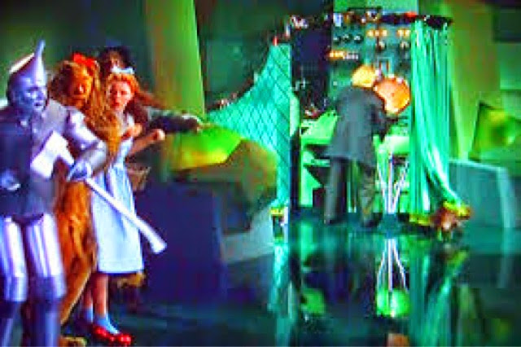
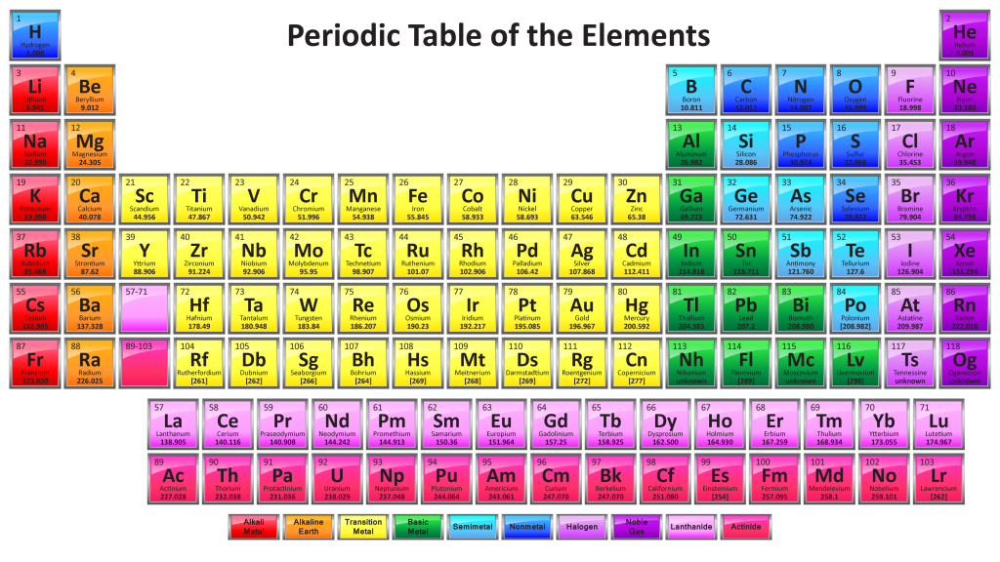
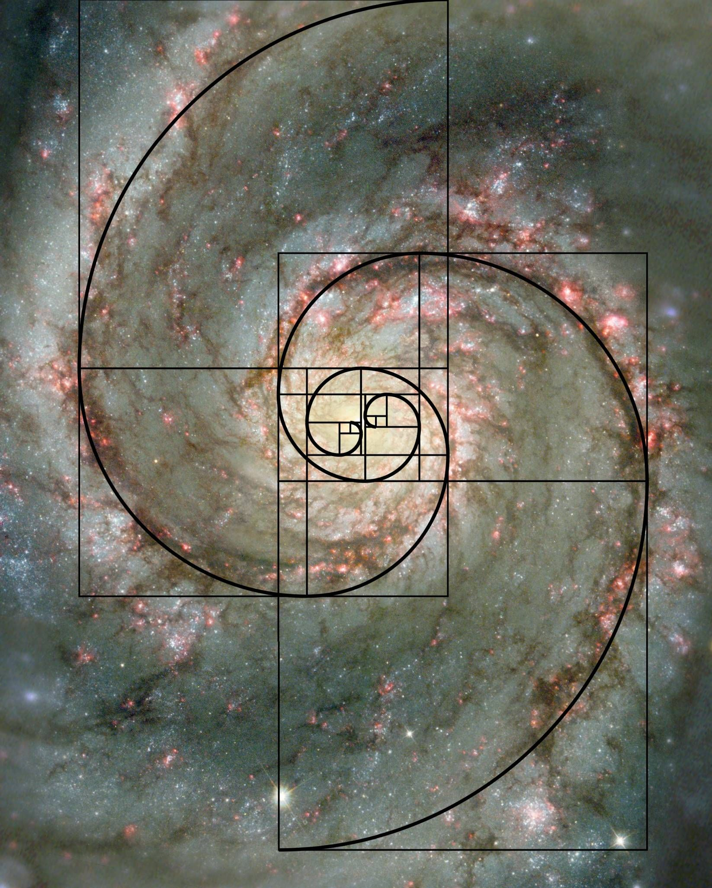
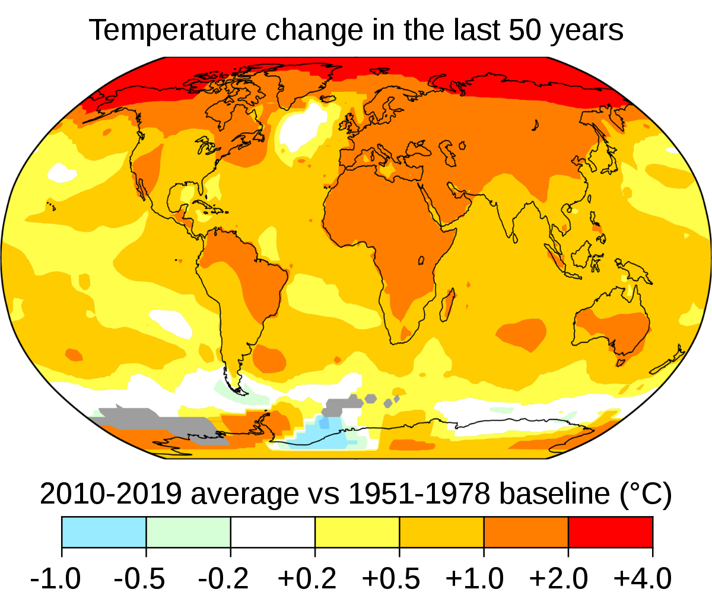

Welcome to Eli's Science Corner. From time to time I will be writing some articles that touch on various science
topics. Below are links to those articles that I have finished so far. My motivation for writing these articles is
two fold: (1) I thoroughly enjoy sharing with others topics in science that interest me and (2) I am annoyed with
the way science gets interpreted by the media.
I have been a student of science, both formally and informally, all my life and am fascinated by what this human endeavor called science has accomplished over
the millennia. The process of learning something new is Entertaining and gives the student something that he/she
can carry with them forever. When we learn something new, it gives us a sense of accomplishment and it increases
our ability to further expand our own knowledge base.
If you read any of the articles, you should do so with the intention of possibly learning something new and hence be
Entertained (The experience of Entertainment is different from that of entertainment. In the former,
you add something to your life, while in the latter you get your senses stimulated while you lose time that you will
never be able to retrieve. In the former, you participate in a life enhancing activity, while in the latter you passively
fritter away precious minutes of your life, minutes that you could actually use to Entertain yourself.). The articles are not
written solely to pass on information to you. Instead, they are written to engage your thought process and to
give you something to imagine. So when reading the articles, please stop and think about what is being presented. Do not be
in a hurry to reach the last paragraph.
I stated that I am annoyed with the way science gets interpreted by the media. I do not read science articles written
by journalists. In order to increase their readership, journalists try to sensationalize their writing. You commonly see headlines
such as: "Scientists are baffled by...", or "Scientists discover the God particle!", or "Latest discovery
makes Einstein's Theory of General Relativity Obsolete" or "Forget Everything You Know About Physics", etc. Scientists
themselves do not talk in terms similar to those headlines. If the original published paper confirming the experimental
verification of the Higgs Boson had the title "We Discovered the God Particle!" (emphasis on the "!"), the authors would have been laughed
out of the scientific community. So I write these articles with the spirit of just presenting the
facts and making logical conclusions based on facts. After all, in reality, that is what science is all about.

Astronomers pointed the Hubble Space Telescope at a spot in the sky that appeared to be void
when viewed through earth based telescopes. After 50 days of exposure time, the image returned
was astonishing. The void was actually full of galaxies that had never been seen before. The light
from the galaxies was so faint that it took 50 days of exposure time in order to see them. The faintest
galaxies are about 13.2 billion light years from earth. The article contains a download link that
enables you to download a hi-res copy of this amazing image.

Remember the scene in the Wizard of Oz when the gang finally found the all
powerful Oz, but behind his curtain it was revealed that he was just
a simple old man that manipulated a lot of powerful special effects?
Well, computers can do incredibly sophisticated and complex things too, but when you look inside,
you will be amazed to find that computers can only do a small set of very simple tasks.
When you put these simple tasks together in a speedy way, you get all the
special effects that we expect from our computers.

When atoms were first formed in the early universe, almost all of those atoms were hydrogen with a little helium, lithium
and beryllium. Even after 13.8 billion years, about 75% of the visible universe is still hydrogen. When we look at the
periodic table of known elements (currently numbering 118), there are 92 that are known to exist naturally in our solar
system. Where did all of those elements come from? How do you start a universe with mostly hydrogen and then get everything
from carbon thru uranium? The answer to that question is found by following the life cycle of stars.
How does a typical aircraft that weighs 100–600 tons get off the ground and
then fly comfortably through the air at 30,000 ft at a speed of 500 mph? Sure, those large power plants
on each wing have a lot to do with this amazing feat, but how does the airplane stay in the air?
It is all about aerodynamics.
And while on the subject of aerodynamics, why does a curveball curve, and how can your tee shot start
on the left side of the fairway and end up in the bushes on the right side of the fairway?
You are welcome to join me on a journey of discovery to find out the answers to these questions.
At the bottom of the article you will find a Golf Ball Flight Path Simulator where you can enter
your driver swing parameters and get a graphical representation of the ball flight.

Over 800 years ago, a young man named Leonardo Pisano Bigollo at the age of 30 wrote a book
called Liber Abaci. It contained numerous examples of calculations that used a
foreign numerical notation brought from India by Arab traders. The notation
used numerals 0 through 9 and also employed the place system that we use today. The scientists
and mathematicians of the time immediately saw the usefulness of this Indian notation.
Included in the book was a calculation of how many rabbits that one could expect over time
starting with only one pair. As we will see in this article, that calculation has applications that
the young Leonardo never dreamed of.

Imagine yourself as a modern Climate Scientist and you are presented with an image that shows
temperature changes over the last 50 years throughout the globe. The data was gathered from infrared
cameras aboard satellites. As a Climate Scientist, your first reaction would be to ask:
"Are these temperatures normal when compared to the Earth's climate history?"
This article takes you through a two-step analysis from a Climate Scientist's point of view and presents
the data that has been collected.